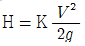
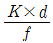
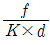
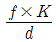
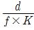
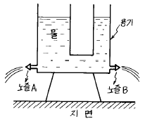
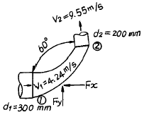
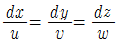
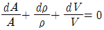
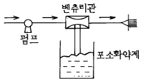

소방설비산업기사(기계) (2002-05-26 기출문제)
1과목: 소방원론
1. 금수성 물질인 것은?
- 염소산염류
- 적린
- 금속칼슘
- 과산화물
(정답률: 알수없음)

2. 일산화탄소(CO)를 1시간 정도 호흡했을 경우 생명에 위험을 주는 위험농도는 몇 ％ 정도인가?
- 0.⑤
- 0.1
- 0.2
- 0.4
(정답률: 31%)
3. 건축물의 주요 구조부가 아닌 것은?
- 내력벽
- 지붕틀
- 보
- 옥외계단
(정답률: 67%)
4. 액화 천연가스(LNG)의 주성분은?
- CH4
- H2
- C3H8
- C2H2
(정답률: 알수없음)
5. 발화의 전기적 열원이 될 수 없는 것은?
- 전기저항
- 정전기
- 아크
- 전선피복
(정답률: 34%)
6. 소화제의 적응대상에 따라 분류한 화재종류 중 A급 화재에 속하지 않는 것은?
- 목재 화재
- 섬유류 화재
- 합성수지류 화재
- 전기 화재
(정답률: 67%)
7. 다음중 방화구획을 하지 않아도 되는 경우는 어느 것인가?
- 3층 이상의 층
- 승강기의 승강로 부분
- 지하층
- 공동주택(아파트)
(정답률: 알수없음)
8. 다음 류별위험물중 불연성 물질로 맞게 짝지어진 것은?
- 1류.2류
- 3류.4류
- 5류.6류
- 1류.6류
(정답률: 64%)
9. 주간 화재시의 현상이 아닌 것은?
- 연기는 대개 백색이며 폭발적인 강한 세력으로 상승한다.
- 연기는 급속으로 퍼지며 끊임없이 상승한다.
- 연기는 상승함에 따라 흑갈색이 되며 동요가 심하다.
- 바람이 강할 때는 연기가 지상에 감돌기 때문에 단절하며 급속도로 상승한다.
(정답률: 알수없음)
10. 불꽃의 색깔에 의한 온도의 측정에서 낮은 온도에서부터 높은 온도의 순서대로 나열한 것은?
- 암적색, 백적색, 황적색, 휘백색
- 암적색, 휘백색, 적색, 황적색
- 암적색, 황적색, 백적색, 휘백색
- 암적색, 휘적색, 황적색, 적색
(정답률: 알수없음)
11. 피난에 관한 설명으로 틀린것은?
- 피난층은 직접 지상으로 통하는 출입구가 있는 층이다.
- 피난층은 하나의 건축물에 반드시 1개만 존재한다.
- 직통계단은 건축물의 어떤층에서 피난층 또는 지상까지 이르는 경로가 계단과 계단참만을 통하여 오르내릴 수 있는 계단을 말한다.
- 피난을 위한 피난계단 또는 특별피난계단은 돌음계단으로 하여서는 아니된다.
(정답률: 알수없음)
12. 산소와 흡열반응을 하며 연료에 함유량이 많을수록 발열량을 감소시키는 것은?
- 황
- 수소
- 탄소
- 질소
(정답률: 50%)
13. 급격한 화학반응에 의하여 본래의 물질이 고온, 고압의 기체로 격렬한 팽창에 의하여 생기는 현상을 폭발이라 할수 있으며 폭발은 크게 4가지 변화의 결과에 의하여 발생한다. 이에 해당되지 않은 것은?
- 화학적변화
- 기계적변화
- 열적변화
- 전기적변화
(정답률: 39%)
14. 건물 밀집지역에서 강풍시의 연소속도는 그 구조면에서 볼때 내화조1,방화조 3의 비율일때 목조는 어느정도인가?
- 2
- 4
- 6
- 8
(정답률: 34%)
15. 화재로 인한 피해에는 직접피해와 간접피해로 나눌 수 있다. 간접피해에 속하는 것은?
- 내장재료의 피해
- 인명피해
- 업무중지에 의한 피해
- 소화수에 의한 설비피해
(정답률: 46%)
16. 후래쉬 오버에 대한 설명을 나타내고 있는 것은?
- 목조건물로서 연소온도는 100℃이다.
- 무염착화와 동시에 일어난다.
- 순간적인 연소확대 현상이다.
- 느리게 연소되어 점차적으로 온도가 올라간다.
(정답률: 알수없음)
17. 방화문에 관한 설명으로 옳은것은?
- 철재및 망입유리로 된 것은 갑종 방화문이다.
- 철재로서 철판 두께가 1.2mm인 것은 갑종방화문이다.
- 골구를 철재로 하고 양면에 0.3mm이상 철판을 붙인 것은 갑종방화문이다,
- 철재로서 철판두께가 0.8mm 이상 15mm미만인 것은 을종방화문이다.
(정답률: 28%)
18. 다음 발화원의 종류중 자연발화 형태가 틀린것은?
- 건성유
- 고무분말
- 원면
- 퇴비
(정답률: 40%)
19. 소화에 관한 설명으로 틀린 것은?
- 분무주수는 냉각효과와 희석효과가 있다.
- 연소진압후의 주수는 수손방지에 유의하여야 한다.
- 분말소화약제는 연쇄반응차단과 산소공급차단의 효과가 있다.
- 유류화재시의 소화방법으로는 방수포를 이용하여 직사주수하는 것이 효과적이다.
(정답률: 55%)
20. 다음 중 설치기준 및 목적이 고가차량(고가사다리차 또는 굴절차)과 직접적으로 관련이 있는 것은?
- 옥내소화전설비
- 자동화재탐지설비
- 비상용승강기
- 가스계소화설비
(정답률: 알수없음)
2과목: 소방유체역학
21. 길이가 400m이고 지름이 25㎝인 관에 평균속도 1.32m/s로 물이 흐르고 있다. 관의 마찰계수가 0.0422일때 손실수두는 얼마인가?
- 0.6 m
- 6 m
- 0.12 m
- 12 m
(정답률: 22%)
22. 점성계수의 단위에 해당되는 것은?
- g/cm.s
- m2/s
- ㎏.m/s
- N/m2
(정답률: 19%)
23. 보정계수 C=0.98인 피토 정압관으로 물의 유속을 측정하려고 한다. 액주계에는 비중이 13.6인 수은이 들어 있고 액주계에서 수은의 높이가 20cm일 때 유속은 몇 m/s인가?
- 1.4
- 6.8
- 7.7
- 10.5
(정답률: 알수없음)
24. 탄산수소나트륨(NaHCO3)이 열분해하여 생성되는 물질이 아닌 것은?
- 탄산나트륨
- 이산화탄소
- 수증기
- 암모니아
(정답률: 38%)
25. 다음 중 펌프(pump)의 이상현상에 해당되지 않는 것은?
- 공동현상(cavitation)
- 수격작용(water hammer)
- 맥동현상(surging)
- 진공현상(vacuum)
(정답률: 42%)
26. 다음 중 레이놀즈수에 대한 설명으로 옳은 것은?
- 점성과 비점성의 관계
- 압축성과 비압축성의 관계
- 층류와 난류의 관계
- 정상류와 비정상류의 관계
(정답률: 알수없음)
27. 동점성계수(ν)를 기본차원 질량(M), 길이(L), 시간(T)으로 표시하면?
- ML-1T-1
- ML-2T-1
- MLT-2
- L2T-1
(정답률: 15%)
28. 부차적손실이

인 관의 상당길이 Le는? (단, d는 관지름, f는 관마찰계수, K는 부차손실계수)



(정답률: 30%)
29. 기화(증발)잠열이 384.2kJ/kg인 천연부탄 3kg이 기화될 때 필요한 열량은 몇 kJ 인가?
- 1152.6
- 274.4
- 115.26
- 27.44
(정답률: 알수없음)
30. 이산화탄소가 압력 2x105 Pa, 비체적 0.04 m3/kg 상태로 저장되었다가, 온도가 일정한 상태로 압축되어 압력이 8x105 Pa 되었다면, 변화 후 비체적은 몇 m3/kg 인가?
- 0.01
- 0.02
- 0.16
- 0.32
(정답률: 알수없음)
31. ABC급 소화성능을 가지는 분말 소화약제는?
- 탄산수소 나트륨
- 탄산수소 칼륨
- 제1 인산암모늄
- 탄산수소 요소 칼륨
(정답률: 65%)
32. 호스릴 이산화탄소 소화설비에서는 하나의 노즐에 대하여 몇 kgf 이상의 소화약제를 저장하여야 하는가?
- 150
- 120
- 90
- 60
(정답률: 19%)
33. 그림과 같이 U자형의 용기에 물이 채워져 있고 지면으로 부터 같은 높이에서 수평방향으로 설치된 똑같은 두 개의 노즐로 부터 물이 쏟아져 나올때 지면까지의 살수거리는 어떻게 되는가?

- 두노즐의 살수거리는 같다.
- A노즐이 B노즐보다 살수거리가 길다.
- B노즐이 A노즐보다 살수거리가 길다.
- 물의 양에 따라 달라진다.
(정답률: 30%)
34. 그림과 같은 곡관에 300L/s로 물이 흐른다. ①과 ②에서 압력이 각각 70kPa, 34kPa이고 d1=300mm, d2=200mm일 때 곡관에 작용하는 y방향의 힘 Fy는 얼마인가?

- 6275 N
- 4169 N
- 3406 N
- 8186 N
(정답률: 16%)
35. 목재의 표면화재에 소화상 필요한 할론 1301의 농도는 얼마 이상이어야 하는가?
- 5 %
- 10 %
- 15 %
- 20 %
(정답률: 30%)
36. 유동하는 유체의 동압을 Wheatstone브리지의 원리를 이용하여 전압을 측정하고 그 값을 속도로 환산하여 유속을 측정하는 장치는?
- 피에조미터
- 열선풍속계
- 쉐도우그래프
- 피토우관
(정답률: 10%)
37. 아래 그림과 같은 수조차의 탱크측벽에 설치된 노즐에서 분출하는 분수의 힘에 의해 그 반작용으로 분류 반대방향으로 수조차가 힘 F를 받아서 움직인다. 속도계수:Cv, 수축계수:Cc, 노즐의 단면적:A, 비중량:γ, 분류의 속도:V 로 놓고 노즐에서 유량계수 C = Cv·Cc = 1로 놓으면 F는 얼마인가?
- F ≒ γ A h
- F ≒ 2 γ A h
- F ≒ 1/2 γ A h
- F ≒ γ

(정답률: 39%)
38. 체적이 0.5m3인 탱크에 산소가 10kg이 들어있다. 그때의 온도가 23℃라 할 때 압력은 몇 MPa 인가?
- 1.452
- 1.539
- 1.653
- 1.725
(정답률: 28%)
39. 평균유속 5m/s의 물이 직경 20cm의 관내를 수평으로 흐를 때 압력이 100kPa이었다면 이 물의 동력은 몇 kW 인가?
- 17.7
- 38.4
- 52.6
- 77.5
(정답률: 알수없음)
40. 다음 중 연속방정식이 아닌 것은? (단, u,v,w는 x,y,z방향의 속도성분, A:단면적, ρ:밀도, V:속도)


- d(ρAV) = 0
- ρAV = C
(정답률: 20%)
3과목: 소방관계법규
41. 무창층이라 함은 지상층중 다음에 해당하는 개구부의 면적의 합계가 그 층의 바닥면적의 1/30 이하가 되는 층을 말한다. 옳지 않은 것은?
- 개구부의 크기가 지름 30cm이상의 원이 내접할 수 있을 것
- 그 층의 바닥면으로부터 개구부 밑부분까지의 높이가 1.2m이내일 것
- 도로 또는 차량의 진입이 가능한 공지에 면할 것
- 화재시 건축물로부터 쉽게 피난할 수 있도록 창살 그밖의 장애물이 설치되지 않을 것
(정답률: 32%)
42. 화재현장으로 출동하는 소방자동차의 통행을 고의로 방해한 사람에 대한 벌칙은 몇 년이하의 징역에 해당되는가?(관련 규정 개정전 문제로 여기서는 기존 정답인 4번을 누르면 정답 처리됩니다. 자세한 내용은 해설을 참고하세요.)
- 3
- 5
- 7
- 10
(정답률: 38%)
43. 소방시설의 종류에서 소화활동설비가 아닌 것은?
- 제연설비
- 연결송수관설비
- 연소방지설비
- 상수도소화용수설비
(정답률: 40%)
44. 위험물 안전관리자를 해임한 때에는 해임한 날부터 몇일 이내에 위험물안전관리자를 선임하여야 하는가?
- 30
- 40
- 50
- 60
(정답률: 82%)
45. 피난구유도등을 설치하지 않아도 되는 곳은?
- 공연장
- 백화점
- 지하구
- 호텔
(정답률: 34%)
46. 형식승인을 얻어야 할 소방용 기계기구 등에 해당되는 것은?
- 화학반응식거품소화기
- 화학반응식거품소화약제
- 이산화탄소소화약제
- 방열복
(정답률: 50%)
47. 방화관리자를 두어야 할 특수장소중 1급 방화관리대상물에 해당되는 것은?
- 스프링클러설비 또는 물분무등소화설비를 설치하는 연면적 3000m2인 소방대상물
- 자동화재탐지설비를 설치한 연면적 3000m2인 소방대상물
- 전력용 또는 통신용 지하구
- 가연성가스를 1000톤이상 저장, 취급하는 시설
(정답률: 알수없음)
48. 위험물제조소 등의 변경허가를 받아야 하는 사항은?
- 펌프설비의 정비
- 지하탱크 맨홀의 정비
- 계량 및 안전장치의 교체
- 위험물탱크의 교체
(정답률: 알수없음)
49. 소방시설공사업을 하고자 하는 사람은 어디에 등록하여야 하는가?
- 행정자치부
- 시.도
- 한국소방안전협회
- 한국소방검정공사
(정답률: 알수없음)
50. 위험물의 운반시 용기.적재방법 및 운반방법에 관하여는 화재등의 위험 예방과 응급조치상의 중요성을 감안하여 어느법령으로 정하는 중요기준및 세부기준에 따라야 하는가?
- 행정자치부령
- 시.도의 조례
- 건설교통부령
- 대통령령
(정답률: 20%)
51. 주유취급소의 고정주유설비중 자동차 등에 직접 주유하기 위한 고정주유설비의 주위에는 주유를 받으려는 자동차 등이 출입할 수 있도록 너비 몇 m 이상, 길이 몇 m 이상의 콘크리트로 포장한 공지를 보유하여야 하는가?
- 너비:12m, 길이:4m
- 너비:12m, 길이:6m
- 너비:15m, 길이:4m
- 너비:15m, 길이:6m
(정답률: 34%)
52. 위험물제조소의 옥외에 있는 하나의 취급 탱크에 설치하는 방유제의 용량은 당해 탱크 용량의 몇 % 이상으로 하는가?
- 50
- 60
- 70
- 80
(정답률: 25%)
53. 소방시설공사업자가 그가 수급한 소방시설공사의 일부를 다른 소방시설공사업자에게 하도급 할 수 있는 회수는?
- 1차에 한한다.
- 2차까지 할 수 있다.
- 3차까지 할 수 있다.
- 4차까지 할 수 있다.
(정답률: 알수없음)
54. 화재를 발견한 사람은 지체없이 소방서, 경찰서, 시, 군 또는 누구에게 알려야 하는가?
- 민방위대
- 소방시설공사업자
- 전기통신사업자
- 관계인
(정답률: 75%)
55. 소방시설공사의 하자보수의 기간이 1년인 것은?
- 자동식소화기
- 비상방송설비
- 옥내소화전설비
- 스프링클러설비
(정답률: 28%)
56. 방염성능의 기준을 정할 때 버너의 불꽃을 제거한 때부터 불꽃을 올리며 연소하는 상태가 그칠 때까지의 시간은 몇 초이내로 정하여 고시하는가?
- 20
- 30
- 50
- 60
(정답률: 알수없음)
57. 구급업무의 수행을 위한 구급대의 편성은 누가 하는가?
- 종합병원이상의 의료기관
- 건설교통부장관
- 소방본부장 또는 소방서장
- 의용소방대장
(정답률: 42%)
58. 다음중 방화관리자의 업무가 아닌 것은?
- 소방계획서의 작성
- 소방용 설비등 설계 및 시공
- 자위소방대의 조직
- 화기취급의 감독
(정답률: 50%)
59. 소방신호의 종류에 해당하지 않는 것은?
- 경계신호
- 발화신호
- 출동신호
- 훈련신호
(정답률: 알수없음)
60. 특수장소중 방염물품을 사용하여야 할 대상이 아닌 것은?
- 아파트를 제외한 건축물로서 층수가 11층이상인 것
- 안마시술소, 헬스클럽장, 특수목욕장, 관람집회시설
- 연면적 50m2이상인 단란주점 또는 유흥주점
- 호텔, 관광숙박시설, 종합병원, 방송국등
(정답률: 22%)
4과목: 소방기계시설의 구조 및 원리
61. 완강기의 강하기구(降下機構)에 관한 설명으로 옳은 것은 어느 것인가?
- 완강기는 엘리베이터에서와 같은 평형추(平衡錘)가 강하하는 사람의 체중을 상쇄하도록 되어있다.
- 로프의 다른 한쪽을 강하하는 사람이 손으로 잡고 적절히 풀어주는 방식이다.
- 전동식 윈치의 원리로서 일정속도로 전동기가 내려주는 방식이다.
- 사용자의 체중에 의하여 강하하는 일을 조속기의 마찰력이 흡수하여 준다.
(정답률: 알수없음)
62. 공동주택이나 호텔 객실에 적합한 제연방식은?
- 밀폐제연방식
- 자연제연방식
- 스모크타워제연방식
- 기계제연방식
(정답률: 알수없음)
63. 옥외소화전 설비를 설치하는 소방대상물로서 맞지 않는 것은?
- 내화구조로서 1∼2층의 바닥면적 합계가 9,000m2 인것
- 지정문화재로서 연면적 1,000m2 인것
- 공장, 창고로서 특수가연물 750배이상을 저장 취급하는 곳
- 주차용 건축물로서 연면적 800m2 인것
(정답률: 알수없음)
64. 할로겐 화합물(할론 1301 제외)을 방사하는 소화기구에 관한 설명이다. 설치장소로 적합한 것은?
- 지하층
- 무창층
- 밀폐된 거실 또는 사무실로서 그 바닥면적이 20m2 미만인 곳
- 밀폐된 거실 또는 사무실로서 그 바닥면적이 20m2 이상인 곳
(정답률: 42%)
65. 다음 소화설비 중 비상전원을 필요로 하지 않는 소화설비는 어느 것인가?
- 옥내 소화전 설비
- 스프링클러 설비
- 옥외 소화전 설비
- 포 소화 설비
(정답률: 10%)
66. 포소화약제 혼합장치 중 아래 그림은 어느 방식에 맞는 것인가?

- Line Proportioner방식
- Pump Proportioner방식
- Pressure Proportioner방식
- Pressure Side Proportioner방식
(정답률: 19%)
67. 연결살수설비의 전용헤드는 천장 또는 반자의 각 부분으로부터 하나의 살수헤드까지의 수평거리가 몇m 이하로 하여야 하는가?
- 2.1m
- 2.3m
- 3.2m
- 3.7m
(정답률: 16%)
68. 스프링클러 설비에 사용되는 펌프기동용 압력챔버의 용적은 얼마 이상이어야 하는가?
- 100ℓ
- 200ℓ
- 300ℓ
- 400ℓ
(정답률: 50%)
69. 분말소화설비에서 일정한 방출압력이 되면 주밸브를 개방시켜 분말 소화약제를 분사 헤드로 부터 방출할 수 있게 하는 것은?
- 정압작동장치
- 가압용 가스용기
- 압력조정기
- 선택밸브
(정답률: 알수없음)
70. 가압송수 장치의 펌프용량이 30㎾이고, 토출량이 1000ℓ /min인 펌프의 양정은 몇 m인가? (단, 펌프효율 80%, 전달계수 1.1이다.)
- 133.85
- 92.73
- 1338.5
- 72.23
(정답률: 62%)
71. 옥내 소화전 설비의 가압장치인 펌프의 양정(揚程)을 산출함에 있어 무시해도 좋은 것은?
- 배관의 마찰손실 수두
- 노즐의 마찰손실 수두
- 소방용 호스의 마찰손실 수두
- 낙차
(정답률: 31%)
72. 배수에 필요한 배관에 장치하는 배수밸브의 위치로서 제일 적합한 것은?
- 최소위의 부분
- 최저위의 부분
- 배관의 최말단
- 자유로운 위치
(정답률: 28%)
73. 폐쇄형 스프링클러 헤드에 대한 설명으로 틀린 것은?
- 방수구에서 유출되는 물을 세분시키는 것은 디프렉타이다.
- 표시온도는 헤드가 작동하는 온도로 헤드에 표시되어 있다.
- 헤드취부 및 디프렉타 중간에 있는 밸브를 유리밸브라 한다.
- 헤드를 조립할 때 이미 설계된 하중을 설계하중이라 한다.
(정답률: 알수없음)
74. 대형소화기에 충전하는 소화약제량 중에서 잘못된 것은?
- 할로겐 화합물 소화기 = 30kg 이상
- 분말 소화기 = 40kg 이상
- 이산화탄소 소화기 = 50kg 이상
- 강화액 소화기 = 60ℓ 이상
(정답률: 25%)
75. 소화용수설비에 설치하는 소화수조의 소요수량이 50m3인 경우의 채수구 수는?
- 1개
- 2개
- 3개
- 4개
(정답률: 59%)
76. 다음은 소화기구를 점검하기 위한 기구류이다. 적합하다고 볼 수 없는 것은 어느 것인가?
- 저울
- 압력계
- 반사경
- 내부 조명기
(정답률: 10%)
77. 가압송수 장치에 있어 수원의 수위가 펌프보다 낮은 위치에 있을 때 배관 흡입구에는 어떤 밸브를 사용하는가?
- 게이트 밸브(Gate Valve)
- 후트 밸브(Foot Valve)
- 지수 밸브(Stop Valve)
- 앵글 밸브(Angle Valve)
(정답률: 알수없음)
78. 소방펌프의 토출량이 600ℓ /min, 전양정은 75m, 펌프효율은 0.6, 전달계수는 1.2일 때 전동기의 용량으로서 가장 적당한 것은?
- 8.8kW
- 14.7kW
- 53.5kW
- 534.6kW
(정답률: 알수없음)
79. 물분무 소화설비는 물을 미립자로 만들어 무상으로 방사시켜 냉각작용, 질식작용 및 유화작용의 소화효과를 갖는다. 다음 소방 대상물등의 적용장소로 적합한 것은?
- 옥외변압기
- 주방
- 아파트거실
- 극장
(정답률: 48%)
80. 2개의 호스릴을 가진 이산화탄소 소화설비에서 소화약제의 저장량은 몇kg 이상으로 해야 하는가?
- 100
- 140
- 180
- 200
(정답률: 10%)